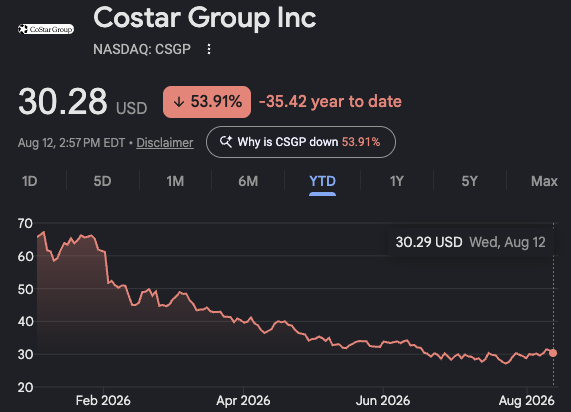
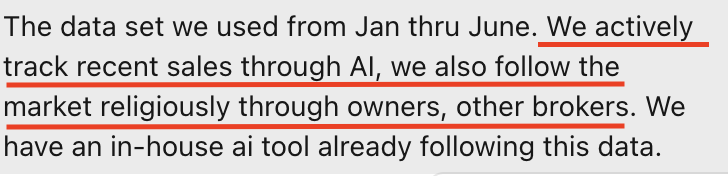
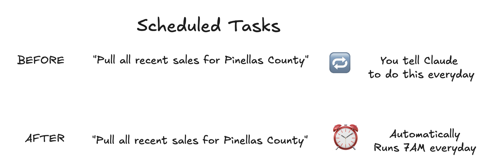
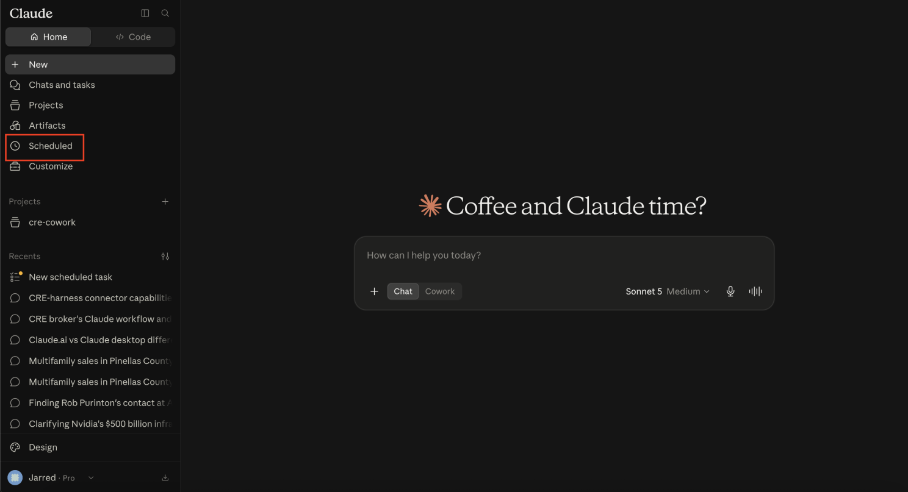
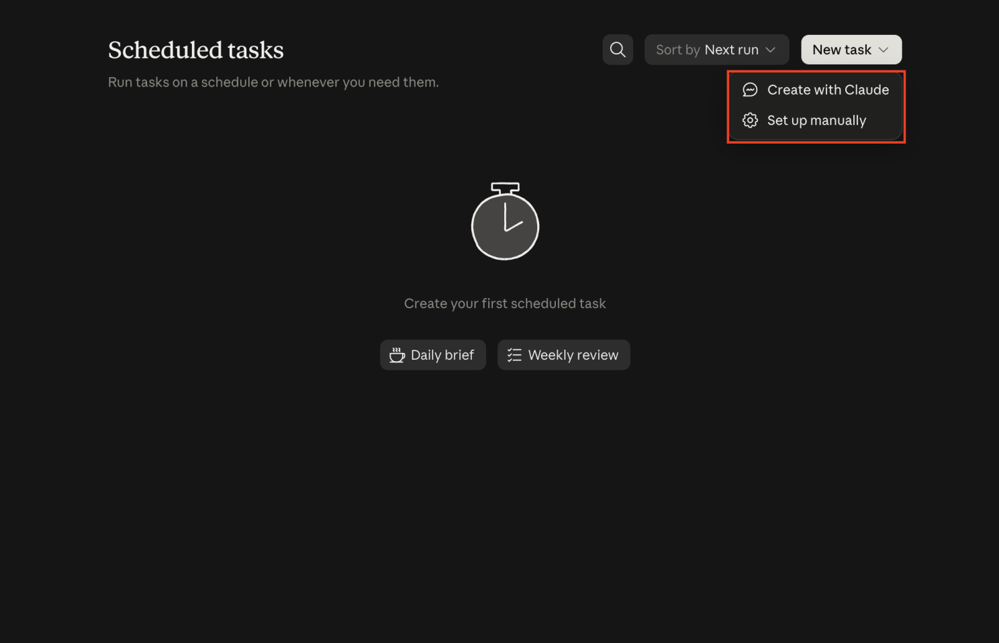
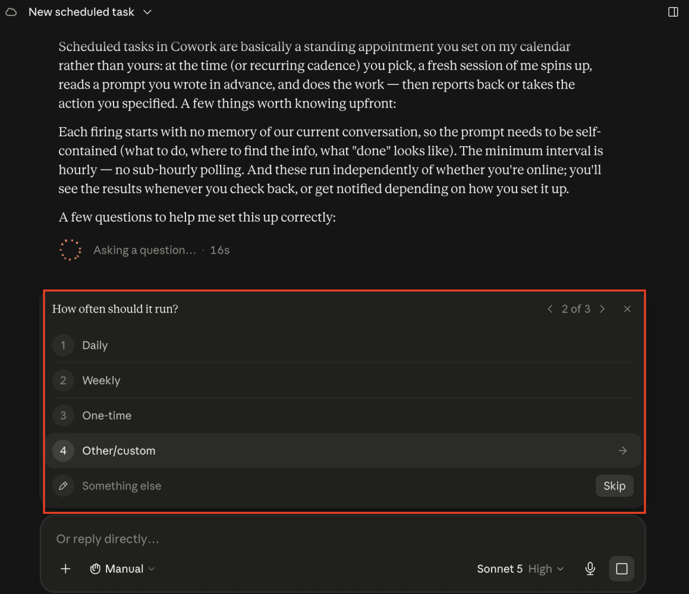

Scheduled Tasks let Claude run automatically on a recurring basis or on demand. Describe the job once, connect the right data, and let the routine produce the next digest.
Commercial real estate has always been a data game.
Just ask CoStar. They have built a monopoly from it.

It has never been easier to keep a pulse on capital and local markets with Claude.
Consider a conversation I had with a CEO running a multifamily firm in Florida:

In 2026, that might be the broadest statement of all time.
So today, I am going to show you how to use Claude Scheduled Tasks to track your local market.
What are Scheduled Tasks?
Scheduled Tasks allow Claude to run automatically on a recurring basis or on demand.
Instead of starting each task from scratch with “Pull all recent sales data from the county appraiser’s site,” you describe the task once and let Claude handle it on a schedule.

Let’s look at how to set up Scheduled Tasks.
Creating Scheduled Tasks
From the home menu of Claude.ai or Claude Desktop, select Scheduled.

Selecting Create with Claude is the best starting point.

Similar to creating Skills, we can create Scheduled Tasks by prompting Claude.
For our local-market example, I am using a custom connector we built for commercial real estate teams. It already connects to the county appraiser’s site and pulls sales history.
Once I select Create with Claude, Claude asks questions that help it understand exactly what should run on a recurring schedule.

As the process continues, Claude asks what source to use. This is where I specify the cre-harness connector.
Since the connector is already set up, Claude asks which tool in the harness should run. To track local sales, we use the recent sales tool.
After answering the questions, Claude finishes the Scheduled Task and it is ready to run.
Manually running Scheduled Tasks
Scheduled Tasks allow Claude to start doing real work and do not require you to be at the computer.
You can manually run a task whenever the question is urgent or let it operate on its normal schedule.
One of the best things about Scheduled Tasks is that they run across devices. Once a task finishes, you can receive the output on your phone.
In the article example, the digest recognized 18 properties sold during the previous week, from August 6 through August 13.
Next steps
Hopefully by now you can see how Scheduled Tasks put work the team does every day onto a recurring cadence.
Here are examples we see teams use:
- Track capital-market updates.
- Manage client pipelines with email summaries and follow-up.
- Prepare mortgage-loan maturity summaries.
Want this built into your workflow?
You just watched us connect Claude to a Scheduled Task, for free, in minutes.
Now imagine every system your team runs on wired together through tasks that surface important details to you and your team every day.
That is altr. We help CRE teams get real value from AI through hands-on enablement and custom deployment work built around the business.
If your team is using Claude but it is not making a real impact, book a call with us.
If your team checks the same source on the same cadence, it is a candidate for a Scheduled Task.
Originally published in the altr’d newsletter on LinkedIn.